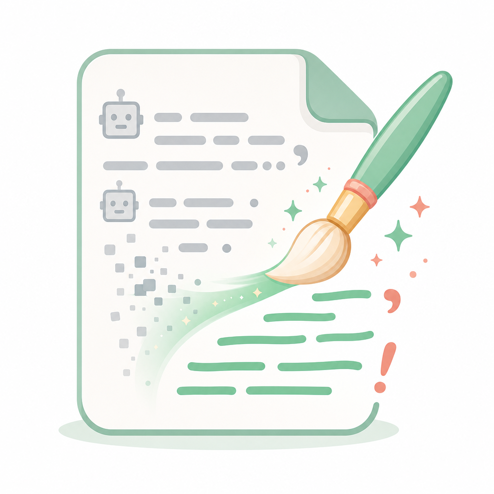
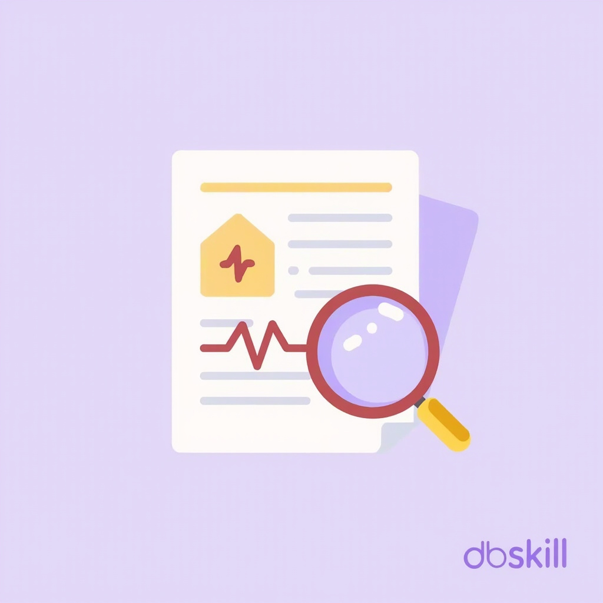
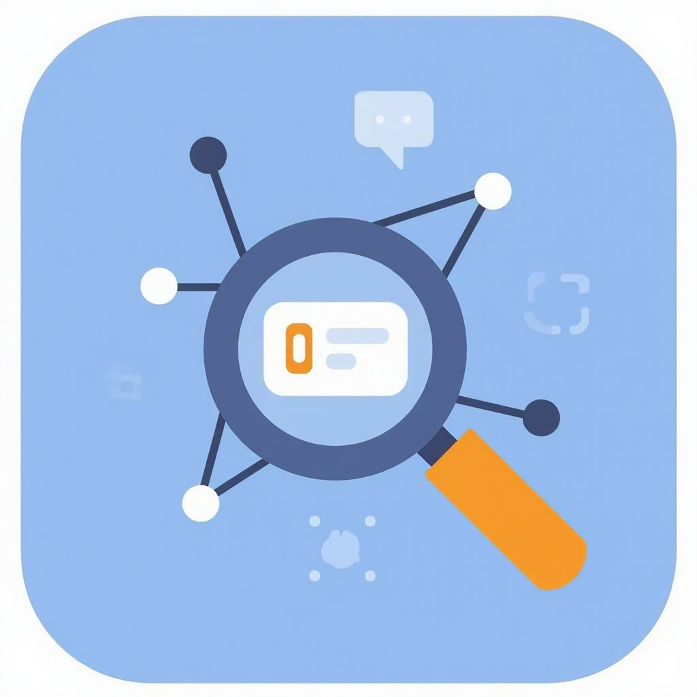
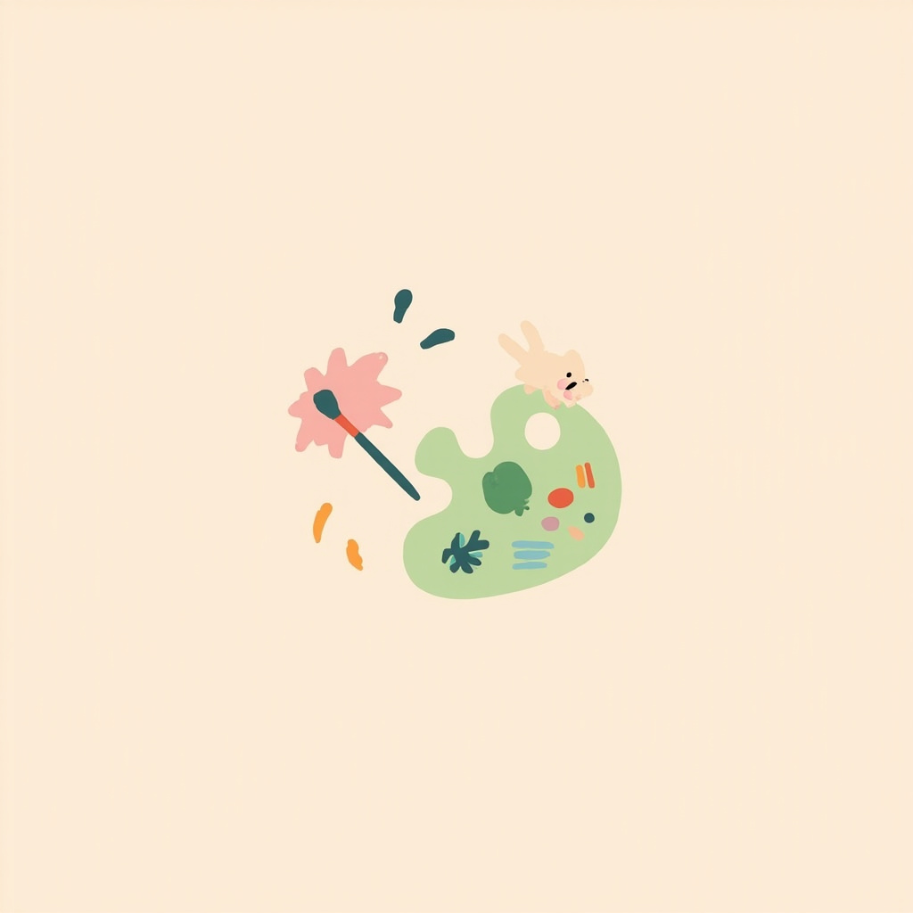
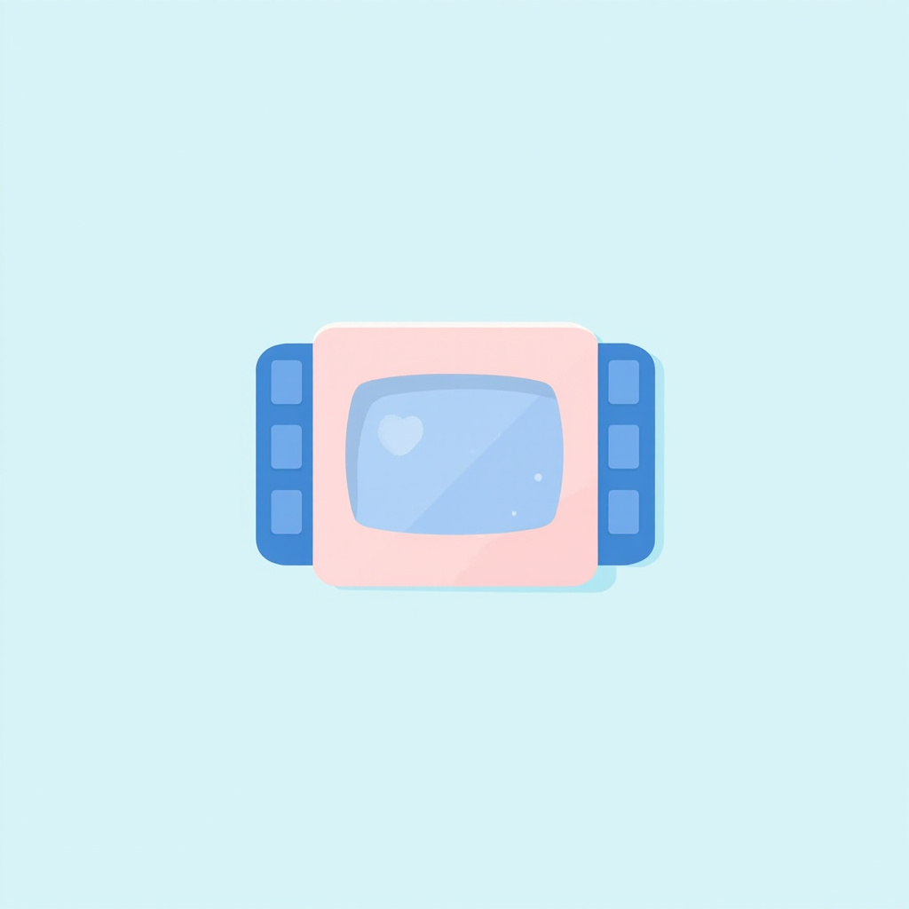

Codex 16 个必装 Skills
写作、润色、调研、配图、封面……再加视频生成与剪辑。一次给你配齐。先收藏，再慢慢装，这 16 个一个比一个实用。
📕第一辑 · 内容创作者 10 大 Skills
写一篇能看、能传、能留住人的稿子，从这 10 个开始。
| # | Skill | 作用 | 一句话定位 |
|---|---|---|---|
| 1 | Humanizer-zh | 润色 | 去 AI 味，让文字像人写的 |
| 2 | dbskill | 选题 | 内容诊断 + 爆款拆解 |
| 3 | content-research-writer | 写作 | 选题→资料→成稿一站搞定 |
| 4 | NotebookLM Skill | 写作 | 知识库创作，减少幻觉 |
| 5 | Deep Research Skill | 调研 | 不会查资料就靠它 |
| 6 | ian-xiaohei-illustrations | 配图 | 观点/流程秒变统一插图 |
| 7 | guizang-social-card-skill | 分发 | 长文→小红书/公众号卡片 |
| 8 | baoyu-skills | 配图 | 信息图、结构图、对比图 |
| 9 | guizang-ppt-skill | 演讲 | 文章秒变 PPT / 演讲稿 |
| 10 | html-anything | 包装 | Markdown→网页 / 海报 / PNG |

1Humanizer-zh — 中文去 AI 味
中文创作者必备的"去 AI 味"技能，能识别空话、套话、模板化表达和 AI 腔，让文章更自然、更像真人写出来的。

2dbskill — 选题诊断器
内容创作者的"选题诊断器"，适合做内容分析、标题优化、爆款拆解、商业表达和 Hook 设计，尤其适合中文自媒体和知识博主。
3content-research-writer — 一站式写作流
从选题、资料搜集、提纲设计到初稿生成的一站式写作工作流，适合公众号、博客、Newsletter 和深度长文创作。
4NotebookLM Skill — 知识库创作
基于个人知识库进行内容创作，能够有效减少幻觉和错误引用，特别适合行业研究、课程开发和深度内容整理。

5Deep Research Skill — 自动调研
专门解决"不会查资料"的问题，自动完成搜索、整理、交叉验证和观点归纳，非常适合科技、AI 和行业研究类创作者。

6ian-xiaohei-illustrations — 文章配图神器
文章配图神器，可以把观点、流程、情绪和隐喻自动转化为统一风格的插图，让内容更具传播力。
7guizang-social-card-skill — 长文变卡片
长文变卡片的利器，可将文章快速拆解为小红书图文、公众号封面和知识卡片，方便内容二次分发。
8baoyu-skills — 创作者视觉工具箱
面向创作者的视觉工具箱，能够生成信息图、结构图、对比图和知识图解，让复杂内容更容易被理解和传播。
9guizang-ppt-skill — 文章秒变 PPT
将文章观点快速转化为 PPT、演讲稿和分享材料，特别适合经常做公开分享和课程输出的人。
10html-anything — 一键生成网页/海报
把 Markdown、文案和文章直接变成精美网页、海报、知识卡片或 PNG 图片，是内容包装和视觉化输出的神器。
🎬第二辑 · 视频创作者 6 大 Skills
装完 Codex 不知道干什么？当然是做视频搞钱！给 Codex 装上这 6 个 GitHub Skills，直接让它参与整条视频制作流程。
| # | Skill | 作用 | 一句话定位 |
|---|---|---|---|
| 1 | HyperFrames | 视频生成 | 一句话生成动效视频 |
| 2 | video-use | 剪辑 | Agent 帮你剪掉废话 |
| 3 | Remotion Skills | 视频生成 | 用 React 批量出视频 |
| 4 | Generative Media Skills | 多模态 | AI 视频/图/音频工具箱 |
| 5 | videocut-skills | 剪辑 | 中文视频剪辑 Agent |
| 6 | seedance2-skill | 提示词 | 给即梦写专业分镜 |
1HyperFrames — 一句话生成动效视频
告诉 Codex 视频主题，它可以使用 HTML、CSS 和动画制作产品介绍、动态海报、知识视频和 PPT 风格视频，最后渲染为 MP4。很适合把文章、推文、产品介绍快速改成视频。
2video-use — 让 Codex 帮你剪视频
把拍摄素材交给 Agent，它可以协助删除停顿、错误片段和口头禅，继续处理字幕、音频、调色与画面动效。经常制作口播、教程和采访视频的人可以重点看它。

3Remotion Skills — 用代码批量制作视频
Remotion 官方提供的 Agent Skills。可让 Codex 使用 React 编写视频，统一控制画面、字幕、动画和时间轴。特别适合批量制作排行榜、数据周报、产品更新和固定栏目视频。
4Generative Media Skills — AI 视频生成工具箱
覆盖图片、视频和音频生成，可以调用 AI 模型制作产品广告、UGC 视频、音乐视频和社交媒体短片。部分功能需要配置 MuAPI，并会产生生成费用。
5videocut-skills — 中文视频剪辑 Agent
面向中文创作者的视频剪辑 Skills，可以让 Agent 理解剪辑需求，并协助处理素材、字幕和短视频制作流程。中文用户想用 Claude Code 或其他 Agent 剪视频可以重点研究。
6seedance2-skill — 帮即梦写专业视频提示词
告诉 Codex 一个视频创意，它会帮你设计逐秒分镜、人物动作、运镜、对白、音效，以及 @图片、@视频 的素材引用方式。生成的提示词可以直接交给即梦 Seedance 2.0 制作核心镜头。它负责提示词和分镜，生成视频仍需进入即梦操作。
🎯 不知道怎么搭配？直接抄这几套
| 场景 | 推荐组合 |
|---|---|
| 文章、推文转视频 | HyperFrames |
| 真人口播、采访剪辑 | video-use + HyperFrames |
| 批量制作固定栏目 | Remotion Skills + HyperFrames |
| AI 短剧、广告视频 | seedance2-skill + 即梦 + video-use |
| 大量测试 AI 视频玩法 | Generative Media Skills |
| 调研 + 写作 + 配图 | Deep Research + content-research-writer + ian-xiaohei-illustrations |
| 知识库深度长文 | NotebookLM + Humanizer-zh + baoyu |
| 一稿多发 | content-research-writer + guizang-social-card-skill |
别再只让 AI 帮你写一篇文章了。
真正的提效，是让 AI 按照你的创作流程完成调研、写作、优化、配图、分发和视频化。
以后只需要告诉 Codex："把这篇推文做成一条 45 秒竖版视频，前三秒抓住注意力，添加中文配音和动态字幕，完成后检查画面与音量。"
剩下的脚本、分镜、提示词、剪辑和包装，都可以交给 Codex 一步步完成。